Once Upon a Time... OpenLayers
About me...
I have a secret...
About this presentation...
Both works are open !!!
Feel free to download and contribute to it !!!
History
Google Maps
- Announced on February 2005
- IMO, one of the most influential applications on the 2000 decade
- Brings to the masses the possibility to explore the world
- Fire starter for the current GIS explosion
OpenLayers
- First release on June 2006
- Open alternative to Google Maps and Bing made by a group of MetaCarta employees
- On 2007 OpenStreeMap starts using it on
the Slippy Map
References
OpenLayers Wiki here,
Wikipedia entry here
Remember...
The source code is the best place to learn
The Map
The map is the central piece on a web mapping application
and is represented by instances of the OpenLayers.Map class.
- The map has some important properties:
projection,
resolutions(zoom levels), units, etc
- A map contains one or more layers
- A map can contain one or more controls
An application can have one or more maps but instances of layers and controls attached to a map can't be used on another one
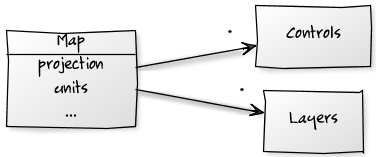
Example
Create a HTML element for the map:
Create a OpenLayers.Map instance:
The Map
The Methods
The map has plenty of methods to deal with:
-
Layers
addLayer(),
getLayer(),
removeLayer(), ...
-
Controls
addControl(),
getControl(),
removeCotnrol(), ...
-
To move around:
zoomTo(),
zoomIn(),
zoomOut(),
pan(),
panTo(), ...
-
Current properties value:
getZoom(),
getCenter(),
getUnits(),
getScale(),
getProjection(), ...
Examples...
...from the Chapter 1 - Mapping Basics of the
OpenLayers Cookbook
source code:
-
Creating simple map:
How to create a very simple map
-
Playing with map options:
How to use some map properties
-
Managing map's stack layers:
How to manage layers withint the map
-
Moving around the map view:
How to manage the map's viewport
Layers
The concept of Layer allows us to group/classify the elements that
must be rendered on the Map
All layers inherits from the base class OpenLayers.Layer, which
defines some common properties for all subclasses:
name Every has a name (that is used in the LayerSwitcher controlopacity A value in the range 0..1 that determines its opacityprojection The projection of the data contained in the layermaxExtent The maximum extent of the dataresolutions A list of map resolutions (map units per pixel) in descending order
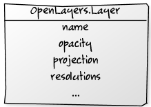
Layers' Hierarchy
We can classify layers in two main categories:
- Raster (for imagery) and
- Vector (for features)
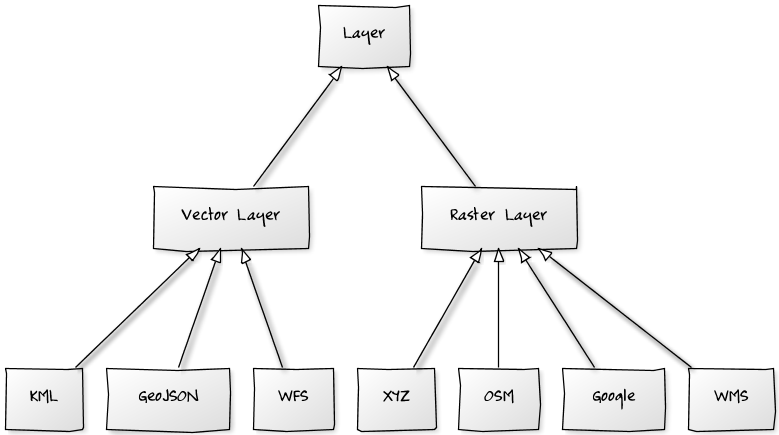
Base Layers and Overlays
OpenLayers differentiates two kinds of layers: Base layers and
Overlays.
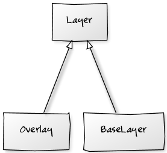
- Base layers controls several aspects of the map (like the projection
used by the Map)
- Base layers are mutually exclusive, only one can be shown at a time
- There could be any number of Overlays
- The
isBaseLayer property inherited from
OpenLayers.Layer determines the kind of layer.
- The
allOverlays property of the
OpenLayers.Map class allows all layers works as overlays.
Examples...
...from the Chapter 1 - Mapping Basics of the
OpenLayers Cookbook
source code:
-
Creating simple map:
Basic example on how to create an
OpenLayers.Map instance.
-
Base and non-base layers:
This example plays with the
OpenLayers.Layer isBaseLayer property
-
Avoiding base layers:
This example shows how to force all layers to act
as overlays using the
OpenLayers.Map allOverlays property
Raster layers
- Raster layers shows imagery (or bitmaps) from
different service providers:
Google, Bing, a WMS server, OSM, etc
- All Raster layers inherits from
the base class OpenLayers.Layer. There are two main subclasses:
- OpenLayers.Layer.Image class allows to create a layer
from s single image file
- OpenLayers.Layer.Grid class decomposes the map viewport in
a lattice of tiles and offers the basic functionalities for the rest of layers
Raster layers
Google Maps
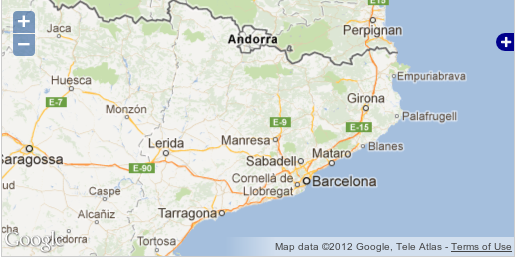
|
Bing
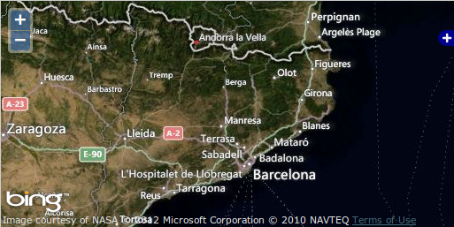
|
OpenStreetMap
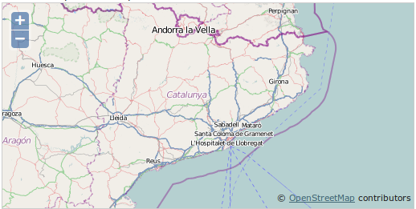
|
WMS servers
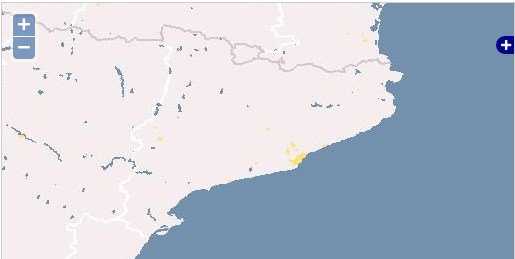
|
MapQuest
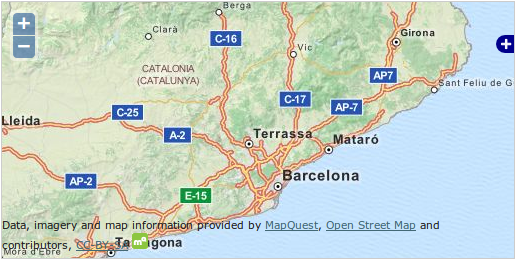
|
Image file
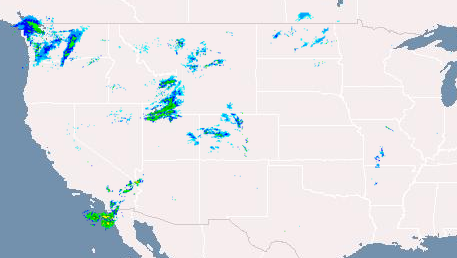
|
Examples...
...from the Chapter 2 - Raster Layers of the
OpenLayers Cookbook
source code:
-
Using Goole Maps imagery:
Shows how to work with Google Maps API v3
OpenLayers.Map instance.
-
Adding WMS layer :
This example show how to create
OpenLayers.Layer.WMS layers
and play with isBaseLayer property
-
Changing layer opacity:
To see how to change a layers opacity
property
-
Using WMS with singleTile mode:
This example shows how to work in singleTile mode on WMS layers
-
Buffering the layer data:
Shows how to improve navigation preloading tiles using the
buffer property
Vector layers
Vector layers allows us to work
with features loaded from a
data source...
A feature is digital representation
of something in the real world: city, river, mountain, ...
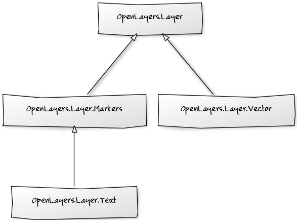
Notes
- OpenLayers.Layer.WFS was DEPRECATED !!!
in OpenLayers 2.12. You can do the same simply
using the OpenLayers.Layer.Vector class
Vector layers
WFS
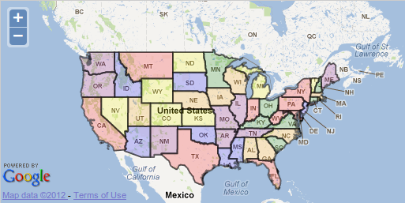
|
KML
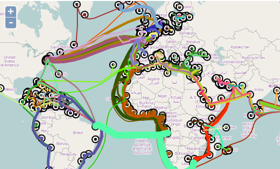
|
Features
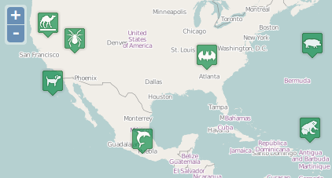
|
Clusters
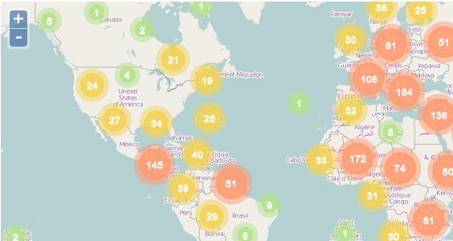
|
Features
- A feature can have attributes
attached to it: city name, population, etc
- A feature can have a visual
style attached: pointRadius, lineWidth, ... (See the
OpenLayers.Feature.Vector.style constant)
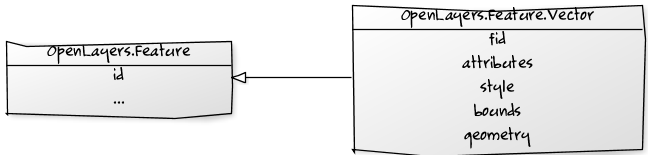
- OpenLayers.Feature class defines the basics of a feature
- OpenLayers.Feature.Vector class is what we really use on vector layers
Geometries
- A feature is represented by a
geometry instance: point, line, polygon, ...
which must be an instance of some subclass of OpenLayers.Geometry
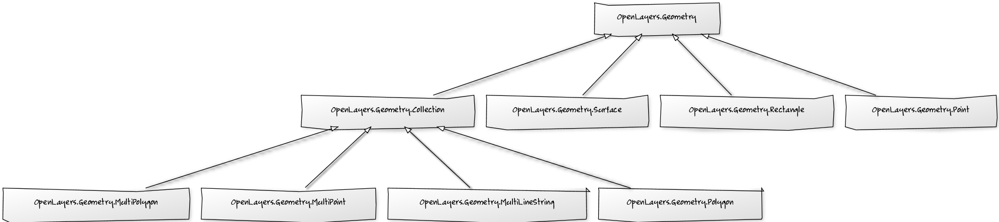
Note
- The geometry is
rendered using the style indicated on the feature
or in the vector layer
style if not exists
- OpenLayers implements the Simple Feature
Access standard, which is a common storage model of
geographical data.
Renderers
There exists different technologies to draw graphics in the browser (mainly
HTML5 Canvas element
and SVG)
A renderer abstracts the way a vector layer renders features (geometries)
in the browser without worry on the technology to use.
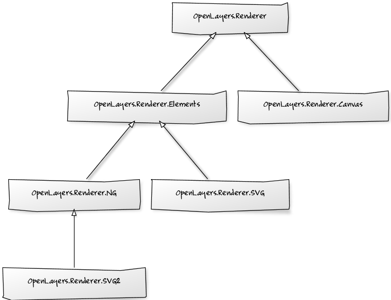
Protocols & Formats
A vector layer can load data from many
data source (HTTP, WFS, SOS, ...) and with many
data formats (GeoJSON, GML, KML, ...)
-
The protocol determines the way a vector layer
communicates with a data source. It must be an instance of some of the
OpenLayers.Protocol subclasses
-
The format determines how features must
be read or written. It must be an instance of some of the
OpenLayers.Format subclasses
Styles, Rules & Filters
There are different ways to style a feature:
- Applying a symbolizer hash in the feature's
style property:
- Applying a symbolizer hash to layer's
style property
- Create a complex OpenLayers.StyleMap object
and attach it to the layer, in the styleMap property:
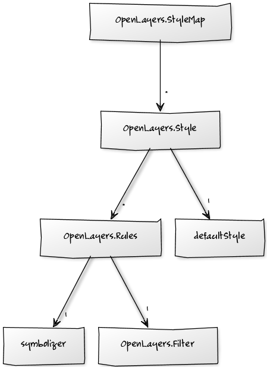
Strategies
Strategies allows us to determine some aspects of the vector layer's behavior
- A vector layer can have any number
of Strategies attached
- Strategies must be added to
the strategies array property of
the OpenLayers.Layer.Vector class
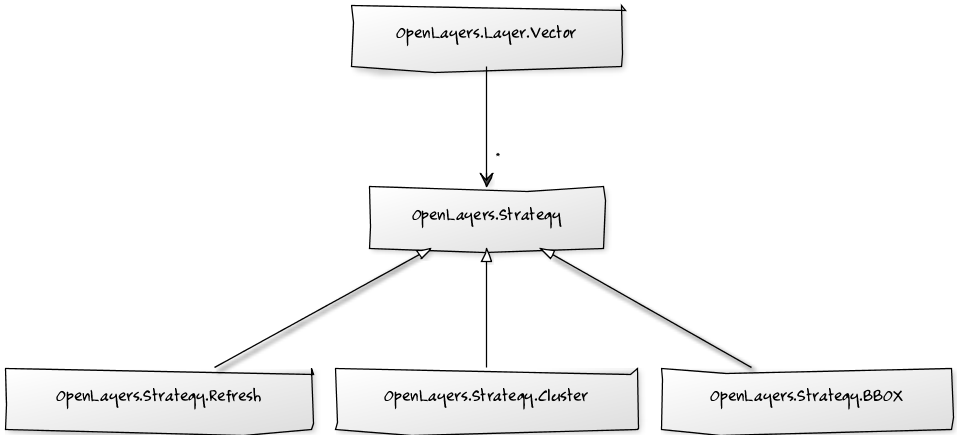
Some common Strategies...
- OpenLayers.Strategy.Refresh refresh a layer automatically
- OpenLayers.Strategy.Cluster makes groups of features to avoid collisions
- OpenLayers.Strategy.Fixed loads layer's data only once
Let's make a summary...

|
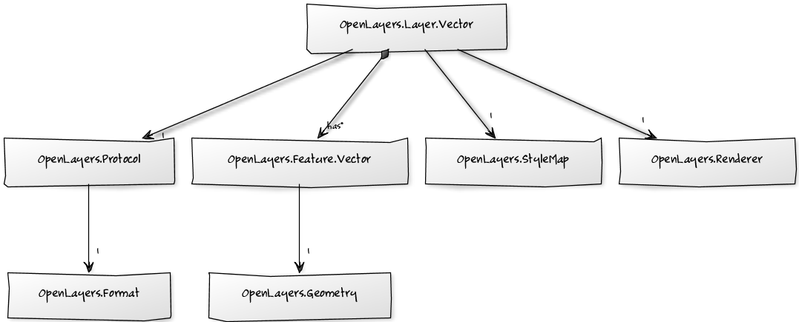
|
When a layer must be drawn:
- The layer calls the protocol so it can load the data
- The protocol communicates with the data source
and reads the data
- The protocol uses the specified format
to transform the data into features and add them to the layer
- The layer delegates to the renderer the task to
render the features
- The renderer draws each feature using the appropriate
geometry and with the appropriate style
Examples...
...from the Chapter 3 - Vector Layers of the
OpenLayers Cookbook
source code:
-
Adding a GML layer:
Basic usage of a vector layer loading GML data
-
Creates features programmatically:
Show how we can create new features without the need to read them
-
Reading and creating features from a WKT:
How to get features using
OpenLayers.Format directly
-
Reading data using Potocols directly:
How to get features using
OpenLayers.Format directly
-
Using the cluster strategy:
Example on how to use the cluster strategy
A nice implementation of cluster strategy with
animations on zoom change
can be found in the acanimal
GitHub repository.
More examples...
...from the Chapter 7 - Stylings of the
OpenLayers Cookbook
source code:
-
Styling features using symbolizers:
Basic usage of hash symbolizers
-
Working with unique value rules:
A way to style features depending on its attribute values
-
Defining custom rules to style features:
A sample working with styles, rules and filters
-
Improving style using StyleMap and feature's attributes replacement:
Improving styling using the attribute replacement capabilities
The truth about OpenLayers...
Most of the JavaScript code we write with OpenLayers is transformed
into HTML elements !!!
Events
Events are like the nerves in our applications (action -> reaction)
- HTML elements can trigger events: click, mouse enter, etc
- Most of the OpenLayers components triggers events:
- OpenLayers.Map:
move,
zoomend,
addlayer, ...
- OpenLayers.Layer:
loadstart,
loadend,
added, ...
- OpenLayers.Layer.Vector:
featuresadded,
featureremoved,
vertexmodified, ...
Check the API documentation (or source code) to know the available events
on each OpenLayers class
...and how OpenLayers components implements events ?
- Many of the OpenLayers classes has an event property which
is an OpenLayers.Events instance
- The OpenLayers.Events is a helper class which allows to
register listeners and trigger events to notify them
- Events are triggered as OpenLayers.Event instances
Listening...
How listen for DOM element events?
Given next HTML button:
We can use this JavaScript code:
How listen for OpenLayers events?
- Using the events.on() method:
- Using the events.register() method:
Remember to unregister your listeners !!!
Examples...
...from the Chapter 4 - Events of the
OpenLayers Cookbook
source code:
-
Creating a side by side map comparator:
Listening for Map events and synchronize two maps
-
Implementing a work in progress indicator for map layers:
Practical use for listening on layer events
-
Listening for vector layer features' events:
Working with events on vector layers
-
Listening for non OpenLayers events:
Shows the use of OpenLayers.Event.observe()
method to listeningfor non OpenLayers components.
Controls
Controls allows to interact with the Map...
Controls can range from visible widgets (like a buttons) to actions (like the navigation or zoom controls)
-
OpenLayers offers controls for
almost any required action: navigation, zoom, feature selection,
feature edition, etc
-
All controls inherits
from base class OpenLayers.Control:
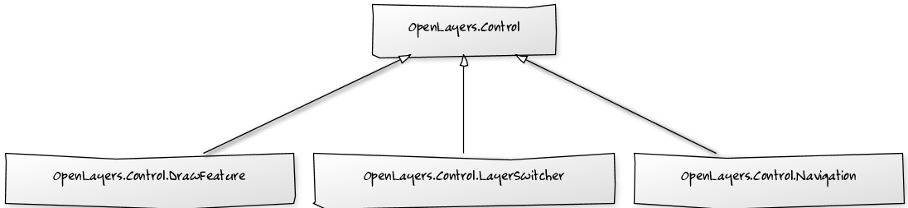
Controls
- A Control is added to (or removed from) the Map
- A Control can be activaded or deactivated
- A Control can be placed
outside the Map if you specify
a DOM element to hold it:
Given this HTML code:
We can use next JavaScript code:
Examples...
...from the Chapter 5 - Controls of the
OpenLayers Cookbook
source code:
-
Adding and removing controls:
Example on how to add and remove controls dynamically
-
Adding a navigation history control:
Show usage for the navigation history control
-
Editing features on multiple vector layers:
How to create features in vector layers with
the OpenLayers.Control.EditingToolbar control
-
Getting feature information from data source:
usage of the OpenLayers.Control.GetFeature control to get feature data from any source
References
- OpenLayers Begginers
- OpenLayers Cookbook
- OpenLayers source code
- OpenLayers API documentation
- http://docs.openlayers.org/library/index.html
Thanks for coming !!!
 ←
→
←
→
/
#